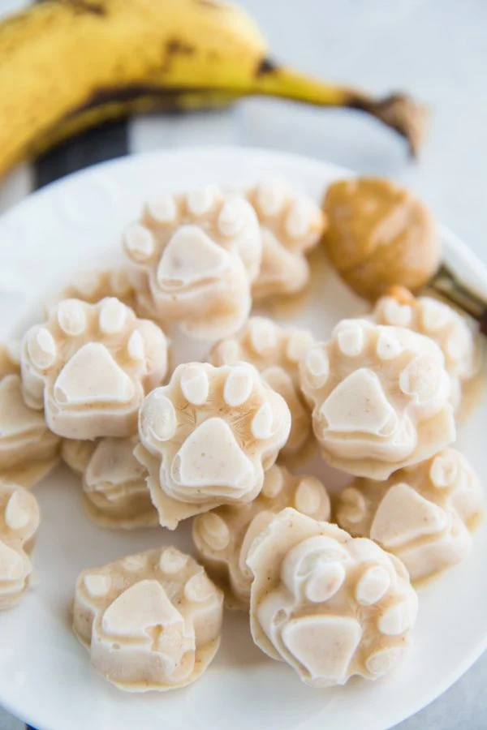

Ice Cream for Dogs
Description
Our sweet little dogs deserve a treat too! This recipe has only three ingredients and stays in the freezer until its needed. This recipe was found on the Foodwithfeeling website.
The PetPom Website offers many tips, tricks and other recipes for raising Pomeranians. They suggest using these as a teething biscuit for younger poms.
Ingredients:
- 16 ounces plain yogurt
- 1 ripe banana
- 1/3 cup all-natural peanut butter, xylitol free
Steps
- Add all ingredients to a blender, blend until smooth
- Pour into a silicone mold or muffin tin depending on the size of your dog
- Place in the freezer for a few hours or until hard
- Store in the freezer until ready to use
Home